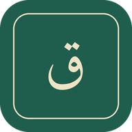

…جارٍ التحميل

ثبّت التطبيق
أضِفه إلى الشاشة الرئيسية لهاتفك
تثبيت
ورد الجزأين ٢٠ و٢١
صفحتك التالية
٠
صفحات مقروءة
٠
قراءات كاملة للجزأين
ابدأ جلسة قراءة
🔔
التذكير اليومي
إشعار الساعة ٨:٣٠ مساءً إن لم تقرأ في يومك
متقدم
✕
−
+
…جارٍ التحميل
أتممتُ هذه الصفحة
🌿
تقبَّل الله منك
العودة إلى الصفحة الرئيسية
كم صفحة ستقرأ في هذه الجلسة؟
−
١
+
ابدأ القراءة
ليس الآن
قرأتُ صفحات خارج التطبيق
آخر صفحة أتممتها
تحديث تقدّمي
إلغاء
إنهاء الجلسة الآن؟
سيُحفظ تقدّمك حتى آخر صفحة أتممتها.
إنهاء الجلسة
متابعة القراءة
إضافة التطبيق إلى الشاشة الرئيسية
حسنًا